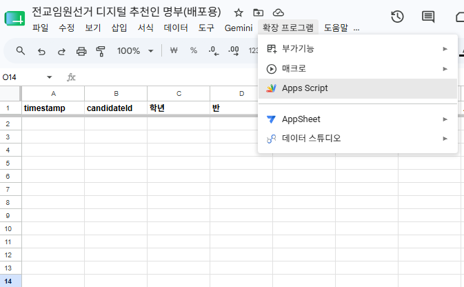
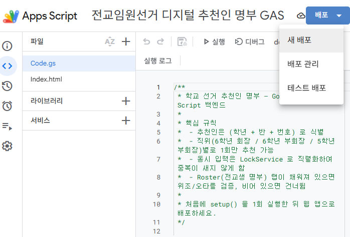
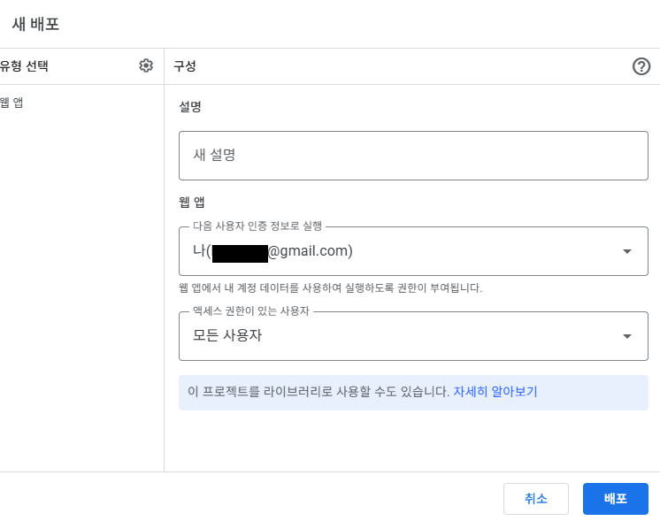
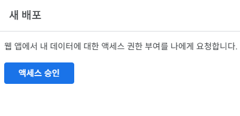
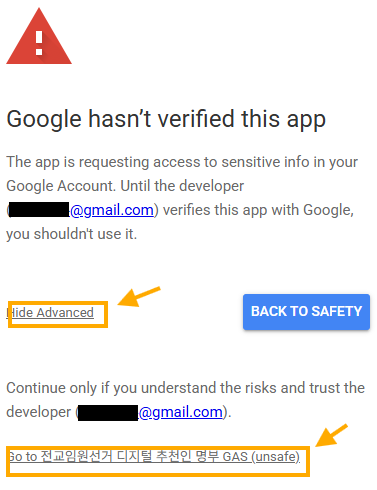
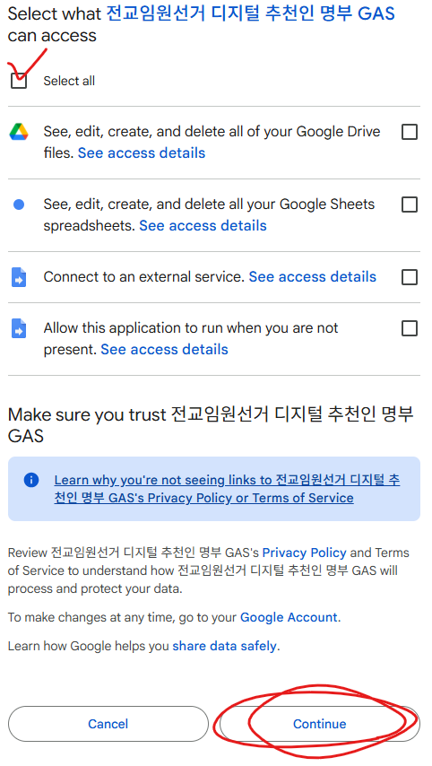
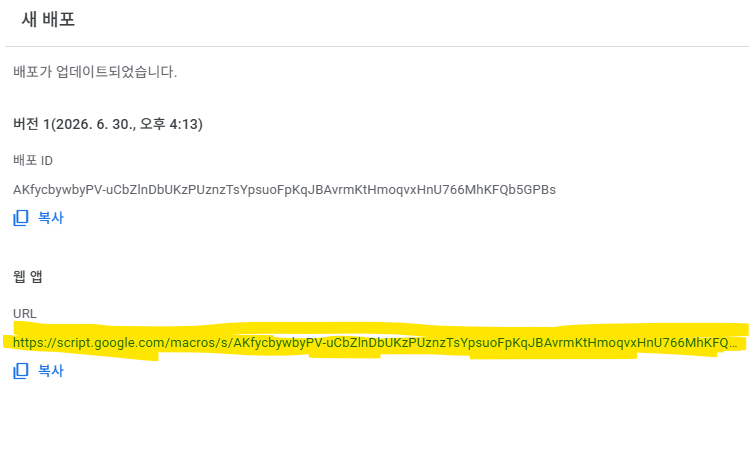
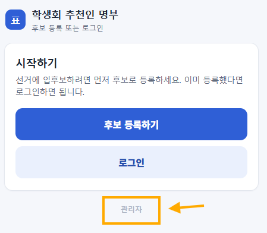

앱스크립트, 복사부터 배포까지 따라하기
1. 앱스크립트 · 웹앱이 뭐예요?
앱스크립트(Apps Script)는 구글 시트에 붙는 작은 프로그램이에요. 여기에 화면을 입혀 웹앱으로 '배포'하면, 브라우저로 여는 주소(링크)가 하나 생깁니다. 서버도 호스팅 비용도 없이 전부 구글 안에서 돌아가고요.
그 링크로 뭘 하는지는 배포물마다 달라요. 반 학생들이 함께 쓰는 것일 수도, 우리 반에서만 쓰는 것일 수도, 나 혼자 쓰는 개인 도구일 수도 있습니다. 이 글은 그런 도구를 받았을 때 내 것으로 만들어 여는 방법만 짚습니다.
2. 받은 걸 내 것으로 — 사본부터 배포까지
순서만 그대로 따라오시면 딱 10분. 👇
1 사본 만들고 앱스크립트 열기
받은 구글 시트를 열고 파일 → 사본 만들기로 내 드라이브에 사본을 하나 떠 둡니다. (원본이 아니라 내 사본을 배포해야 내 것이 돼요.) 만든 사본을 연 상태에서 상단 메뉴 확장 프로그램 → Apps Script를 누르면 편집기가 열립니다.

2 [배포] → [새 배포]
편집기 오른쪽 위의 파란 배포 버튼을 누르고 새 배포를 선택합니다.

3 유형과 권한 설정 후 배포
유형은 웹 앱. 실행 사용자는 나, 액세스 권한은 모든 사용자로 맞춥니다. (이래야 누구나 로그인 없이 링크로 바로 들어옵니다.) 그리고 배포를 누릅니다.

4 액세스 승인
처음 배포하면 권한을 물어봅니다. 액세스 승인을 누르고, 본인 구글 계정을 선택하세요.

5 "확인되지 않은 앱" 화면 — 겁내지 마세요
"Google hasn't verified this app"이라는 경고가 뜹니다. 놀라지 마세요 — 내가 방금 만든 내 앱이라 안전합니다. 아래 Advanced를 누르고 Go to … (unsafe)로 계속 진행합니다.

6 권한 전체 허용
권한 목록이 나오면 Select all(전체 선택) 체크 후 Continue를 누릅니다.

7 웹 앱 주소 복사
배포 완료! 웹 앱 URL이 뜹니다. 이 주소를 복사해 두세요. 이게 여러분의 앱 링크입니다.

8 열어서 확인
복사한 주소를 브라우저에 붙여넣어 앱이 뜨면 배포 성공! 이제 이 링크가 살아있는 내 웹앱입니다. (배포물에 따라 관리자 설정 같은 게 있으면, 여기서 이어서 하면 돼요.)

3. QR로 웹앱 나눠주기
주소를 그대로 전달해도 되지만, QR코드로 만들면 훨씬 편해요. 복사한 웹 앱 URL을 무료 QR 코드 생성기에 붙여넣어 QR 이미지를 뽑습니다.
그다음은 배포물 성격대로 나눠주세요. 여러 사람이 쓰는 도구라면 교실·복도·안내문에 QR을 붙이고, 나만 쓰는 도구라면 링크를 북마크해 두면 됩니다.
4. 자주 묻는 것
Q. 배포하다 "확인되지 않은 앱" 경고가 무서워요.
내가 방금 만든 내 앱이라 안전합니다. 구글이 아직 검토 안 한 개인 스크립트라 뜨는 표준 경고예요. Advanced → 계속으로 진행하면 됩니다.
Q. 사본 안 뜨고 받은 원본을 그대로 쓰면 안 되나요?
원본은 만든 사람 계정 거예요. 내 사본을 떠야 내 계정에서 배포되고, 데이터도 내 시트에 쌓입니다.
Q. 배포는 됐는데 다른 사람이 "권한이 없습니다"가 떠요.
3번 스텝에서 액세스 권한을 모든 사용자로 했는지 확인하세요. '나만'으로 되어 있으면 남이 못 들어옵니다.
마무리
서버 만들 줄 몰라도, 코딩 안 배웠어도 괜찮습니다. 받은 구글 시트 도구 하나를, 순서만 따라 내 링크로 바꾸는 거예요. 무료로 자유롭게, 필요에 맞게 고쳐 쓰셔도 됩니다.
손 덜 가는 교실 — 좋은 도구, 받아서 바로 내 것으로. 🐈
예시 사이트 열어보기 →관리자 비밀번호: 1234
만드는 재미로 사는 초등쌤, 박덕구 🐈